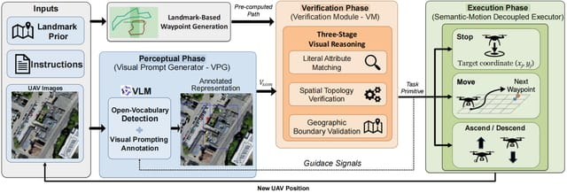

ViSA-Enhanced Aerial VLN: A Visual-Spatial Reasoning Enhanced Framework for Aerial Vision-Language Navigation.
IROS 2026 · Accepted.
- A triple-phase architecture uses structured visual prompting so that vision-language models can reason directly on image planes for aerial VLN, without extra training or intermediate scene graphs. On the CityNav benchmark it improves the success rate by 70.3% over the fully trained state of the art.